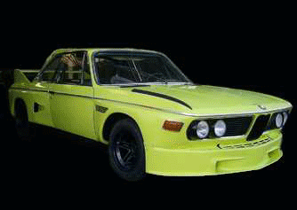
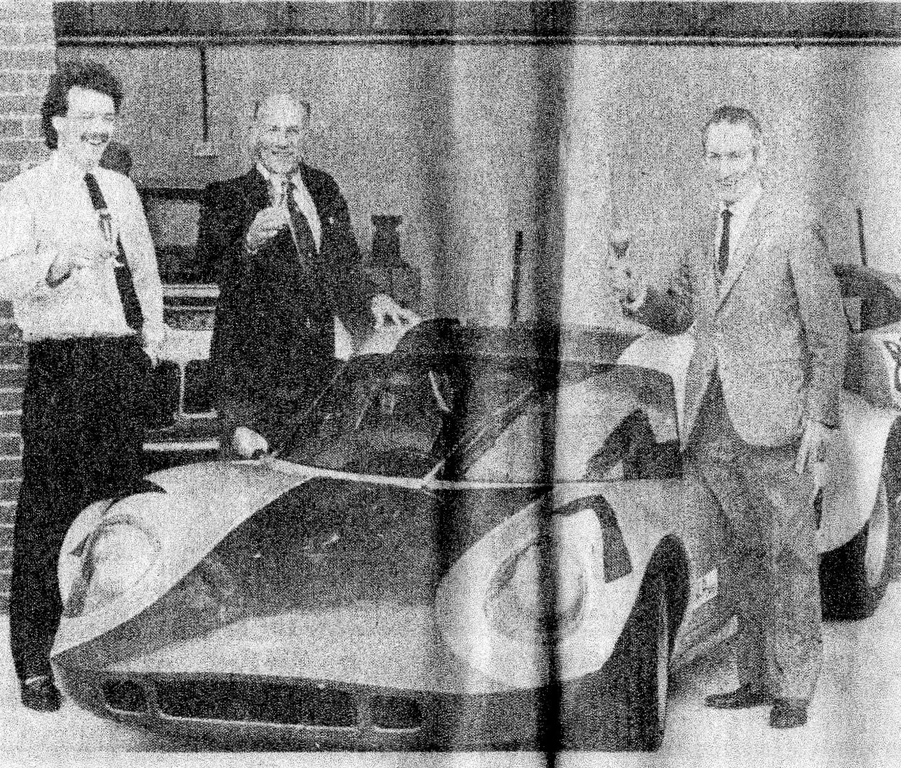

About Us
AAMG Hull Ltd have been successfully trading for 26 years and we previously traded for 13 years under the name of Fountain Bridge Garage, We are approved by the Good Garage Scheme and we are full members of the Institute Of the Motor Industry.
Our services consist of the servicing and repairs to all makes and models of cars, light commercials, minibuses, and motor caravans. We also specialise in high performance cars, classic car restoration, and manual & automatic gearbox repairs. Our other services include fault diagnostics, auto electrical repairs, tracking & 4 wheel alignment, and welding.
We have been an approved MOT test centre for 31 years offering MOT tests on class 4, 5, and 7 vehicles. Our workshops have 4 ramps and can accommodate vehicles up to 5 tonnes along with numerous hard standings, we carry a comprehensive stock of up to date specialist tools and diagnostics equipment which enables us to work and carry out repairs on the most up to date vehicles.
We can work on all new vehicles and only use OE and equivalent parts and materials so as to ensure there is no compromise to any manufactures warranty. All work undertaken is carried out to the highest standards by highly trained technicians, and all work carried out by AAMG Ltd is guaranteed.
-----------------------------------------------------------------------------------------------------------------------------------------
We have specialised in the restoration of road and race BMW CSL's since 1987 and also specialise in the restoration of E Type Jaguars, however we do undertake the restoration work on many other marks as can been seen on our: Classic Car Restoration Gallery
The director of the company Mr Don Haldenby jnr was formally a partner in another specialist restoration workshop that restored a number of classic race cars for Sir Stirling Moss and many others.
We cater for individual owners of a vehicle to company and fleet operators and pride ourselves on a prompt reliable and cost effective service keeping customers informed at all times and giving them the choice of brand parts that are fitted to their vehicles taking into account the age and type of vehicle in order to carry out the most cost affective repairs.
For your convenience we accept the following methods of payment: cash, cheque (accompanied by a guarantee card), and most credit/debit cards. Alternatively for company/fleet operators we offer full account facilities.
-----------------------------------------------------------------------------------------------------------------------------------------
1986 Stirling Moss Work
The famous racing driver Stirling Moss has left his car a Chevron B8 in the capable hands of father and son team Mr Don Haldenby senior and junior of DCH Autocraft Beverly East Yorkshire.
The two Dons had been given the task of completely rebuilding the car, they said the engine a two-litre Ford Hart engine, was to be replaced with a BMW M11 engine and that so far the work had taken two weeks.
Mr Haldenby senior who had worked for Stirling Moss in the 1950s and 60s as chief mechanic said that they had always kept in touch, he said they had met recently in Hull and Stirling had later asked them if they would work on the car and later went on to restore many others for Stirling including his Elva Mk 7, Chevron B16, Lola T 70 and Widi.
Click the link here to view our Stirling Moss Connection Paper Clippings: Stirling Moss Connection